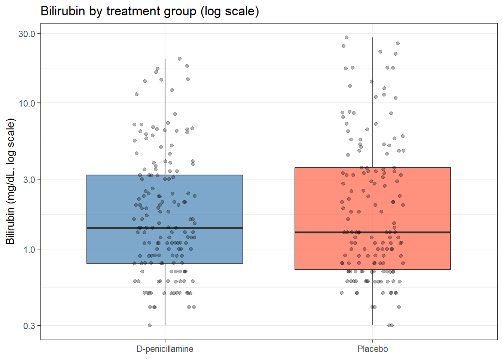
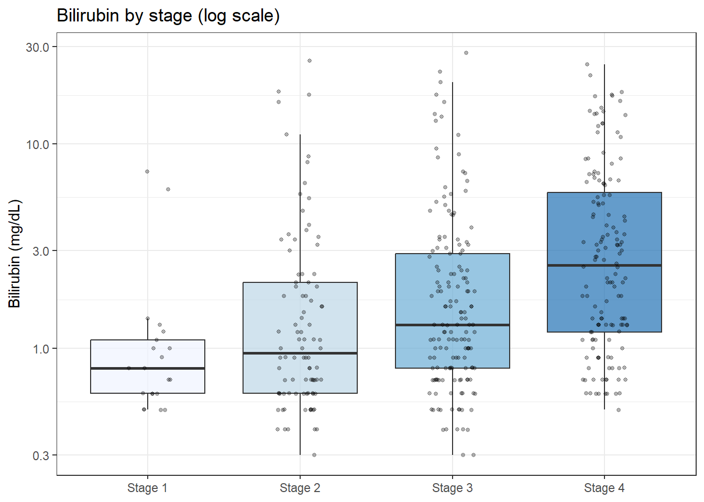

You have only 8 mice per group and the outcome variable (e.g., tumour volume) is heavily right-skewed with an obvious outlier. A t-test requires approximate normality, and with \(n = 8\) you cannot rely on the CLT. Nonparametric tests work on the ranks of the data rather than the raw values, so they are robust to non-normality and outliers.
5.2 Learning Objectives
After completing this session you will be able to:
Identify when a nonparametric test is more appropriate than a t-test
Perform the Wilcoxon rank-sum (Mann-Whitney) and Wilcoxon signed-rank tests in R
Perform the Kruskal-Wallis test as a nonparametric ANOVA alternative
Interpret the results of nonparametric tests
Understand the trade-offs: nonparametric tests are more robust but less powerful when normality holds
5.3 Background: Ranks Instead of Raw Values
Parametric tests (t-tests, ANOVA) make assumptions about the distribution of the data. Nonparametric tests replace raw values with their ranks and test whether the distribution of ranks differs between groups.
Key advantage: robust to outliers and skewed distributions. Key cost: slightly less powerful than parametric tests when the normality assumption is met.
Parametric test
Nonparametric equivalent
When to use
One-sample t-test
Wilcoxon signed-rank test
n small, distribution non-normal
Two-sample t-test
Wilcoxon rank-sum (Mann-Whitney)
Two independent groups, n small or skewed
Paired t-test
Wilcoxon signed-rank test
Paired data, n small or non-normal
One-way ANOVA
Kruskal-Wallis test
= 3 groups, normality violated
5.4 Example 1: Lab Data (Small Samples)
These two real datasets have n = 10 per group — too small to rely on the Central Limit Theorem. Checking normality first, then deciding between a t-test and a Wilcoxon test, is the key skill.
5.4.1 Two-Sample Wilcoxon: Tooth Growth at Low Dose (ToothGrowth)
At 0.5 mg/day, OJ vs ascorbic acid comparison has only 10 guinea pigs per group. Before running a t-test, check normality — if it fails, use the Wilcoxon rank-sum test.
With n = 10 and some departure from the QQ line, the Wilcoxon test is the safer choice.
res_wilcox <-wilcox.test(len ~ supp, data = tg_05, exact =FALSE)tidy(res_wilcox)
# A tibble: 1 × 4
statistic p.value method alternative
<dbl> <dbl> <chr> <chr>
1 19.5 0.0232 Wilcoxon rank sum test with continuity correcti… two.sided
# Medians and IQR --- always report these, not means, with a Wilcoxon testtg_05 |>group_by(supp) |>summarise(n =n(),median =median(len),q1 =quantile(len, 0.25),q3 =quantile(len, 0.75) )
# A tibble: 2 × 5
supp n median q1 q3
<fct> <int> <dbl> <dbl> <dbl>
1 Ascorbic acid 10 7.15 5.95 10.9
2 Orange juice 10 12.2 9.7 16.2
TipWilcoxon vs t-test: Same Data, Different Assumptions
Both give a similar conclusion here. When they disagree, trust the Wilcoxon for small non-normal samples.
5.4.2 Paired Wilcoxon: Two Sleep Drugs (sleep dataset)
The sleep dataset (base R) has 10 patients measured on two drugs. With n = 10 and a paired design, the paired Wilcoxon signed-rank test is appropriate if the differences are not normally distributed.
Warning in wilcox.test.default(sleep_wide[["Drug 2"]], sleep_wide[["Drug 1"]],
: cannot compute exact p-value with ties
Warning in wilcox.test.default(sleep_wide[["Drug 2"]], sleep_wide[["Drug 1"]],
: cannot compute exact p-value with zeroes
tidy(res_sleep)
# A tibble: 1 × 4
statistic p.value method alternative
<dbl> <dbl> <chr> <chr>
1 45 0.00909 Wilcoxon signed rank test with continuity corre… two.sided
For the paired Wilcoxon, normality of the differences is what matters, not the raw values. With n = 10 the test is valid regardless, but checking gives confidence.
5.5 Example 2: Clinical Data (PBC)
Bilirubin is heavily right-skewed and contains extreme outliers — a genuine case where nonparametric tests are clearly more appropriate than t-tests regardless of sample size.
5.5.1 Wilcoxon Rank-Sum: Bilirubin by Treatment Group
pbc_rand <- pbc |>filter(!is.na(trt), !is.na(bili))pbc_rand |>ggplot(aes(x = trt, y = bili, fill = trt)) +geom_boxplot(alpha =0.7, outlier.shape =NA) +geom_jitter(width =0.15, alpha =0.3, size =1.5) +scale_fill_manual(values =c("steelblue", "tomato")) +scale_y_log10() +labs(title ="Bilirubin by treatment group (log scale)",x =NULL, y ="Bilirubin (mg/dL, log scale)") +theme_bw() +theme(legend.position ="none")

tidy(wilcox.test(bili ~ trt, data = pbc_rand))
# A tibble: 1 × 4
statistic p.value method alternative
<dbl> <dbl> <chr> <chr>
1 12007 0.842 Wilcoxon rank sum test with continuity correcti… two.sided
Pairwise comparisons using Wilcoxon rank sum test with continuity correction
data: pbc_stage$bili and pbc_stage$stage
Stage 1 Stage 2 Stage 3
Stage 2 1.000 - -
Stage 3 0.029 0.168 -
Stage 4 2.0e-05 2.1e-07 8.1e-05
P value adjustment method: bonferroni
5.6 Where to Find Data Like This
ToothGrowth (base R, used in Example 1): Small groups (n=10) with dose-response design. Ideal for demonstrating the decision between a t-test and Wilcoxon test.
sleep (base R, used in Example 1): 10 patients on two drugs. The paired Wilcoxon teaching example.
survival::pbc (used in Example 2): Right-skewed bilirubin values in a clinical trial. Classic nonparametric test application.
Mouse Phenome Database: phenome.jax.org: many small-sample mouse phenotyping studies where nonparametric tests are appropriate.
5.7 What Can Go Wrong
Using nonparametric tests as a default “safe” choice Nonparametric tests are not always better. When data are normally distributed, the t-test is more powerful. Use nonparametric tests when (1) sample size is small and normality is suspect, (2) the outcome has extreme outliers that reflect real biology, or (3) the outcome is an ordinal scale.
Reporting the wrong summary statistics Wilcoxon tests compare distributions, not means. Report medians and IQR, not means and SD, alongside a Wilcoxon test result.
Treating a non-significant Kruskal-Wallis as proof of no difference A p > 0.05 from Kruskal-Wallis means the data are consistent with no group differences; but with small samples, power may be low. Report the effect size (e.g., median differences) and note if the study is underpowered.
Pairwise comparisons without correction If Kruskal-Wallis is significant, doing all pairwise Wilcoxon tests without correction inflates the Type I error. Always apply p.adjust.method = "bonferroni" or "holm" in pairwise.wilcox.test().
5.8 Exercises
5.8.1 Exercise 1 (Guided): Wilcoxon Test for Bilirubin by Sex
Using survival::pbc, test whether bilirubin differs between male and female patients.
Plot bilirubin by sex (use log scale on y-axis).
Report medians and IQR for each sex.
Run a Wilcoxon rank-sum test.
Would you reach the same conclusion with a t-test on log(bili)? Compare.
# A tibble: 2 × 4
sex median q1 q3
<fct> <dbl> <dbl> <dbl>
1 Female 1.3 0.7 3.4
2 Male 2.05 1.3 3.5
# 3. Wilcoxon testtidy(wilcox.test(bili ~ sex, data = pbc_sex))
# A tibble: 1 × 4
statistic p.value method alternative
<dbl> <dbl> <chr> <chr>
1 6574. 0.0290 Wilcoxon rank sum test with continuity correcti… two.sided
# 4. t-test on log scale for comparisontidy(t.test(log(bili) ~ sex, data = pbc_sex))
Pairwise comparisons using Wilcoxon rank sum test with continuity correction
data: pbc_s$bili and pbc_s$stage
Stage 1 Stage 2 Stage 3
Stage 2 1.000 - -
Stage 3 0.029 0.168 -
Stage 4 2.0e-05 2.1e-07 8.1e-05
P value adjustment method: bonferroni
# 3. Boxplotpbc_s |>ggplot(aes(x = stage, y = bili, fill = stage)) +geom_boxplot(alpha =0.7, outlier.shape =NA) +geom_jitter(width =0.15, alpha =0.3, size =1) +scale_fill_brewer(palette ="Blues") +scale_y_log10() +labs(title ="Bilirubin by stage (log scale)",x =NULL, y ="Bilirubin (mg/dL)") +theme_bw() +theme(legend.position ="none")

5.8.3 Exercise 3 (Open-ended)
From your own data, identify a continuous variable that is clearly non-normal (e.g., cytokine levels, survival times, cell counts). Run both a t-test and a Wilcoxon test. Do they agree? Which is more appropriate, and why?
5.9 Comprehension Check
In what two situations is a nonparametric test preferred over a t-test?
What does the Wilcoxon rank-sum test actually test? What is its null hypothesis?
You run a Kruskal-Wallis test and get p = 0.02. What should you do next?
Should you report means or medians alongside a Wilcoxon test result?
Your colleague says “I used a Wilcoxon test because it doesn’t assume normality, so it’s always safer.” Is this correct?
NoteAnswers
When (1) sample size is small (\(n < 30\)) and data are visibly non-normal, or (2) the data contain extreme outliers that represent real biology (not data errors).
The Wilcoxon rank-sum test tests whether the two groups are drawn from the same distribution. More precisely, the null hypothesis is that the probability of an observation from group 1 being greater than a randomly selected observation from group 2 equals 0.5 (i.e., no tendency for one group to have larger values).
Follow up with pairwise Wilcoxon tests (using pairwise.wilcox.test()) with a Bonferroni or Holm correction to identify which specific group pairs differ.
Medians and IQR. The Wilcoxon test is based on ranks, and medians are the rank-based measure of location. Reporting means alongside a Wilcoxon test is inconsistent.
Not quite. Nonparametric tests are more robust when normality is violated, but they are less powerful when data are approximately normal. Using them by default when a t-test would be valid loses statistical power unnecessarily.
5.10 How to Report
5.10.1 Reporting Nonparametric Test Results
Note
In a methods section: “Because [outcome] was markedly non-normal (Shapiro-Wilk p < 0.05; confirmed by QQ-plot), the Wilcoxon rank-sum test was used to compare groups. For comparisons across three or more groups, the Kruskal-Wallis test was used, followed by Dunn’s post-hoc test with Bonferroni correction.”
In results: “Median [outcome] was higher in [group A] than [group B] (median [IQR]: X [L, U] vs Y [L, U]; W = Z, p = P).”
What to always include:
Medians and IQRs (not means and SDs — you chose this test because the mean is inappropriate)
Test statistic (W for Wilcoxon, H for Kruskal-Wallis)
p-value
For Kruskal-Wallis: post-hoc method and correction applied
Internal consistency: If you use a nonparametric test, report medians. Reporting the mean and then quoting a Wilcoxon p-value is internally contradictory.
5.11 Further Reading
Hollander and Wolfe (1999) — Nonparametric Statistical Methods, comprehensive reference
Bland (2015) — Chapters on nonparametric methods in An Introduction to Medical Statistics
?wilcox.test and ?kruskal.test in R: built-in documentation with examples
Bland, Martin. 2015. An Introduction to Medical Statistics. 4th ed. Oxford University Press.
Hollander, Myles, and Douglas A. Wolfe. 1999. Nonparametric Statistical Methods. 2nd ed. John Wiley & Sons.